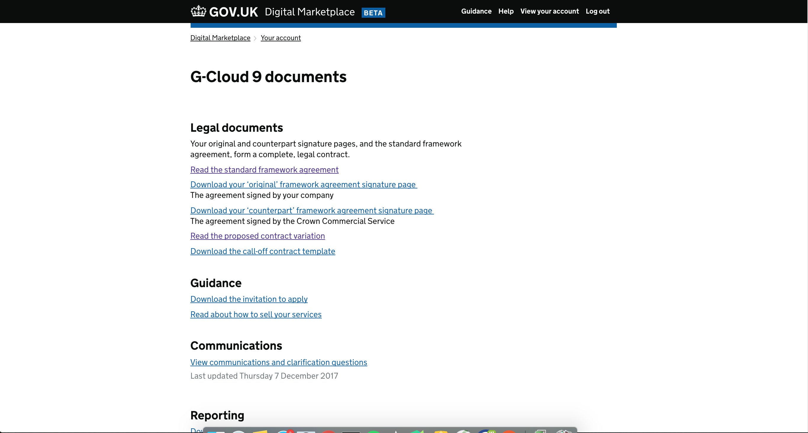
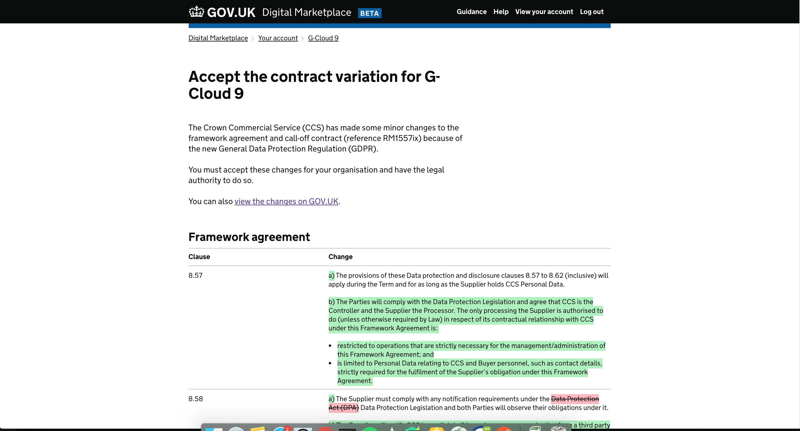
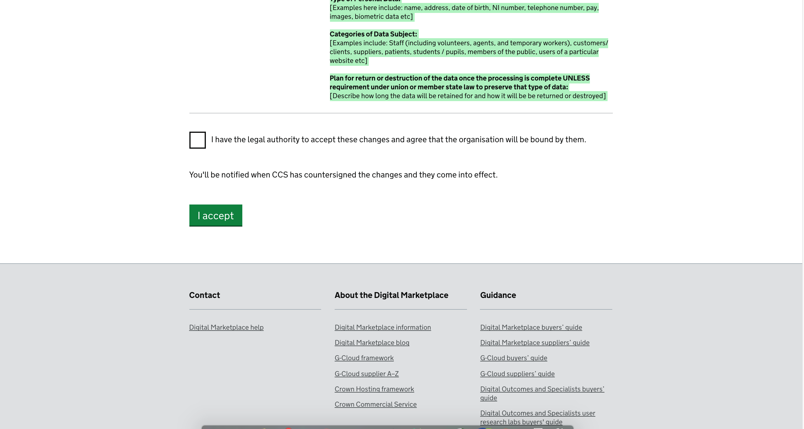
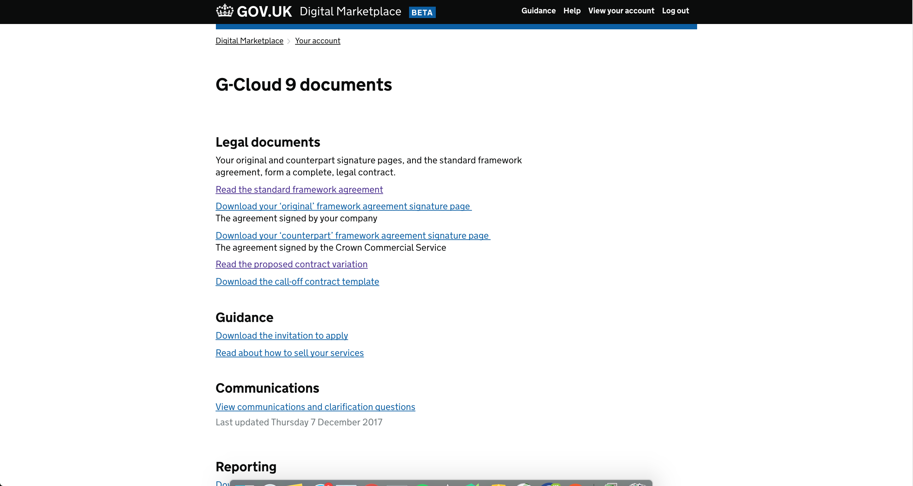
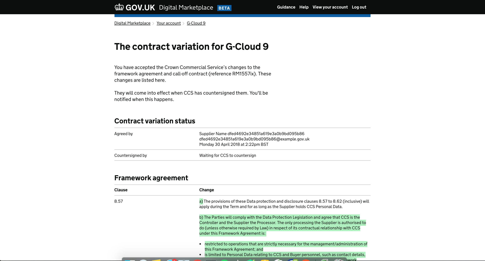
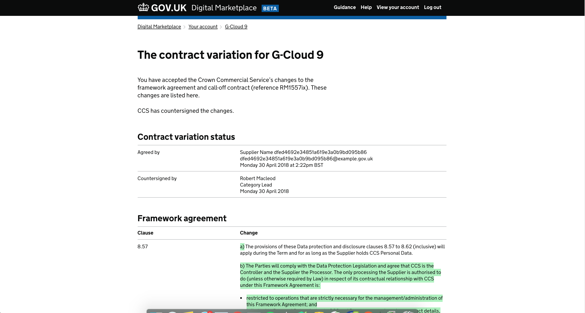

Contract variations¶
Contents
What is a contract variation?¶
Contract variations is a feature which allows variation to framework contracts and call off contracts to be changed and accepted through a web interface rather than the traditional way of downloading a document, printing it, signing it and scanning it back to the requester. The contract variations feature also allows an easy way to have visibility of the changes that were amended and also only focuses on the specific areas which are changed. It is user friendly and accessible.
The workflow for a contract variation¶
Ideally (demonstrated in the order of this manual entry and the screenshots section):
A contract variation is proposed by CCS
The content of the variation will be finalised with CCS, legal and content
The date for the variation to go to suppliers is finalised
The date for CCS countersigning the variation is finalised
An email is prepared linking suppliers to the variation page
The variation is added to the database at the given time
The email is sent to suppliers
(Follow up prompt emails may be sent)
The supplier accepts the variation
The countersignature is performed on the proposed date
The supplier can still accept the variation after the countersignature date has passed. Until then the platform will reflect that they have not accepted the agreement.
As soon as they accept it the agreement will appear as countersigned.
How to create a new contract variation¶
1 - Create contract variation YAML file¶
Create a new file in:
digitalmarketplace-frameworks/frameworks/<framework-family>/messages/contract_variation_<contract_variation_id>.yml
Use the following template:
variation_description_not_in_place: |
The Crown Commercial Service (CCS) has made some changes to the framework agreement and call-off contract (reference XXXXXX).<br/><br/>
You must accept these changes for your company and have the legal authority to do so.
variation_not_yet_agreed_extra: |
To put these changes into effect, we need you to review and accept them here.
You can [download a PDF version of these changes](/suppliers/frameworks/g-cloud-9/files/g-cloud-9-contract-variation.pdf).
variation_description_not_in_place_but_agreed: |
You have accepted the Crown Commercial Service’s changes to the framework agreement and call-off contract (reference XXXXXX). These changes are listed here.<br/><br/>
They will come into effect when CCS has countersigned them. We’ll let you know when this happens.
variation_description_in_place: |
You have accepted the Crown Commercial Service’s changes to the framework agreement and call-off contract (reference XXXXXX). These changes are listed here. <br/><br/>
CCS has countersigned the changes.
variation_comes_in_effect_description: |
We’ll tell you when CCS has countersigned the changes and they come into effect.
variation_agreement_label: |
I have the legal authority to accept these changes and agree that the company will be bound by them.
confirmation_message: |
You’ve accepted the proposed changes. They’ll come into effect when CCS has countersigned them. We’ll let you know when this happens.
framework_agreement_changes:
-
clause: 'X.X.X'
change:
This is stuff that is not being changed.....
<span class="visuallyhidden">start deletion</span>
<del>
This is what is being deleted
</del>
<span class="visuallyhidden">end deletion</span>
<span class="visuallyhidden">start insertion</span>
<ins>
This is what is being added
</ins>
<span class="visuallyhidden">end insertion</span>
call_off_contract_changes:
-
clause: 'X.X.X'
change:
This is stuff that is not being changed.....
<span class="visuallyhidden">start deletion</span>
<del>
This is what is being deleted
</del>
<span class="visuallyhidden">end deletion</span>
<span class="visuallyhidden">start insertion</span>
<ins>
This is what is being added
</ins>
<span class="visuallyhidden">end insertion</span>
3 - Commit new version¶
Commit changes using the following message:
Bump version to X.X.X
Adds in contract variation for <framework-family>.
4 - Creating a contract variation email template¶
Add new template to:
digitalmarketplace-supplier-frontend/app/templates/emails/<framework-family>_variation_<variation_id>_agreed.html
Example:
<!DOCTYPE html>
<html>
<head lang="en">
<meta charset="UTF-8">
</head>
<body style="font-size:120%;">
Dear supplier,
<br />
<br /> Thanks for accepting the proposed ‘contract variation’ to the Digital Outcomes and Specialists (DOS2) framework agreement and call-off contract.
<br />
<br /> The contract variation will only come into effect when all suppliers have accepted the changes and the Crown Commercial Service has countersigned it - we’ll let you know when this happens.
<br />
<br /> Until then, you must use the published framework agreement and call-off contract:
<br />
<a href="https://www.gov.uk/government/publications/digital-outcomes-and-specialists-2-framework-agreement">
https://www.gov.uk/government/publications/digital-outcomes-and-specialists-2-framework-agreement
</a>
<br />
<a href="https://www.gov.uk/government/publications/digital-outcomes-and-specialists-2-call-off-contract">
https://www.gov.uk/government/publications/digital-outcomes-and-specialists-2-call-off-contract
</a>
<br />
<br /> Thanks,
<br /> The Digital Marketplace team
</body>
</html>
5 - Add variation to the database¶
Api:
https://<environment-url>/frameworks/<framework-slug>
Example Payload:
{
"frameworks": {
"frameworkAgreementDetails": {
"contractNoticeNumber": "2017/S 046-085247",
"frameworkAgreementVersion": "RM1557ix",
"frameworkExtensionLength": "12 months",
"frameworkRefDate": "08-05-2017",
"frameworkURL": "https://www.gov.uk/government/publications/g-cloud-9-framework-agreement",
"lotDescriptions": {
"cloud-hosting": "Lot 1: Cloud hosting",
"cloud-software": "Lot 2: Cloud software",
"cloud-support": "Lot 3: Cloud support"
},
"lotOrder": [
"cloud-hosting",
"cloud-software",
"cloud-support"
],
"pageTotal": 34,
"signaturePageNumber": 3,
"variations": {
"1": {
"createdAt": "2018-02-13T17:03:00.000000Z"
}
}
}
},
"updated_by": "Kev"
}
How to countersign a contract variation¶
6 - Add countersignature to the database¶
Api:
https://<environment-url>/frameworks/<framework-slug>
Example Payload:
{
"frameworks": {
"frameworkAgreementDetails": {
"contractNoticeNumber": "2017/S 046-085247",
"frameworkAgreementVersion": "RM1557ix",
"frameworkExtensionLength": "12 months",
"frameworkRefDate": "08-05-2017",
"frameworkURL": "https://www.gov.uk/government/publications/g-cloud-9-framework-agreement",
"lotDescriptions": {
"cloud-hosting": "Lot 1: Cloud hosting",
"cloud-software": "Lot 2: Cloud software",
"cloud-support": "Lot 3: Cloud support"
},
"lotOrder": [
"cloud-hosting",
"cloud-software",
"cloud-support"
],
"pageTotal": 34,
"signaturePageNumber": 3,
"variations": {
"1": {
"createdAt": "2018-02-13T17:03:00.000000Z",
"countersignedAt": "2018-04-30T10:00:00.000000Z",
"countersignerName": "Css Person",
"countersignerRole": "Category Lead",
}
}
}
},
"updated_by": "Kev"
}
Contract variations in pictures¶
Without a contract variation¶
Before you add a contract variation to the database, the framework documents page will look like this:
https://www.preview.marketplace.team/suppliers/frameworks/g-cloud-9
Once a contract variation is added¶
Once you’ve added a contract variation using steps 1-5 above, you’ll get a link to the variation on the documents page and a new page will be available:
https://www.preview.marketplace.team/suppliers/frameworks/g-cloud-9
https://www.preview.marketplace.team/suppliers/frameworks/g-cloud-9/contract-variation/1
 Once a contract variation is accepted by the supplier¶
Once a supplier has accepted the contract variation by accepting on the contract variation page, the framework documents page will look the same, but the variation page will reflect the acceptance:
https://www.preview.marketplace.team/suppliers/frameworks/g-cloud-9
https://www.preview.marketplace.team/suppliers/frameworks/g-cloud-9/contract-variation/1
Once a variation is countersigned by CCS¶
Once a variation is countersigned by using step 6, both pages will indicate that there is an accepted variation:
https://www.preview.marketplace.team/suppliers/frameworks/g-cloud-9
https://www.preview.marketplace.team/suppliers/frameworks/g-cloud-9/contract-variation/1
